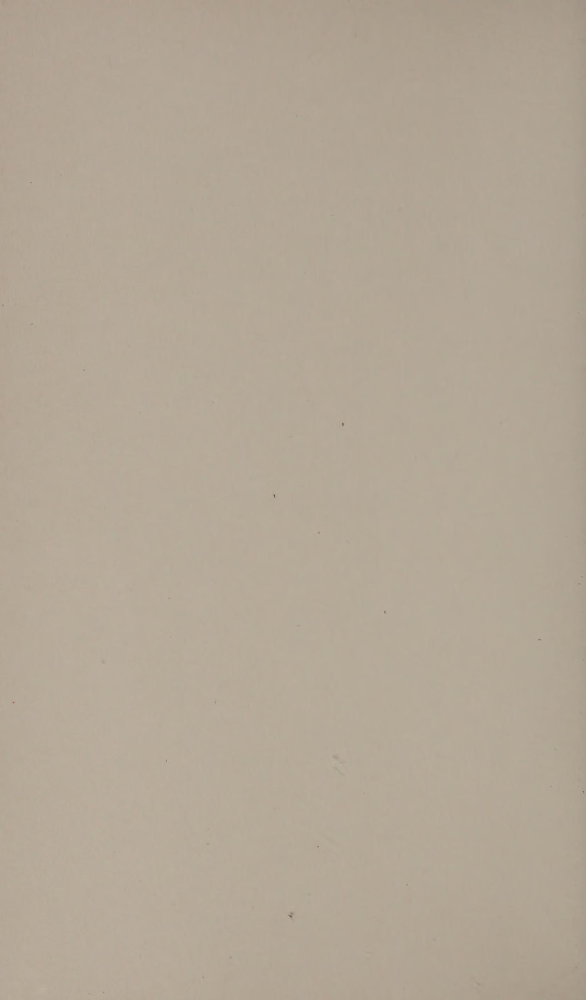

Phần I: Cân Bằng, Trạng Thái Dòng Chảy & Triết Lý Âm Dương Trên Sân Đấu
Trải nghiệm kỳ diệu của huyền thoại Evonne Goolagong Cawley, trạng thái hòa làm một In The Zone và nghệ thuật trực quan hóa nội tâm
1. Lời Tựa Từ Evonne Goolagong Cawley & Trải Nghiệm "In The Zone"
Trong toàn bộ sự nghiệp thi đấu đỉnh cao của mình, khoảnh khắc kỳ diệu nhất mà một vận động viên có thể chạm tới không phải là giây phút giơ cao chiếc cúp vô địch, mà là Trạng thái dòng chảy (flow state) khi bản ngã hoàn toàn biến mất.
Huyền thoại bảy lần vô địch Grand Slam Evonne Goolagong Cawley đã mở đầu cuốn sách bằng hồi ức sống động về trận chung kết US Open lịch sử năm 1974 với Billie Jean King:
Suốt trận đấu nghẹt thở đó, bà bước vào một vùng không gian tâm thức huyền ảo mà các vận động viên phương Tây thường gọi là "In The Zone".
Trong trạng thái đó, bà cảm nhận sự hòa hợp tuyệt đối giữa cơ thể, cây vợt, quả bóng và chuyển động của đối thủ bên kia lưới.
Mỗi sợi dây cước chạm vào bóng dường như trở thành phần mở rộng tự nhiên của các đầu dây thần kinh xúc giác; thời gian dường như trôi chậm lại, quả bóng bay tới to như một quả dưa hấu và mọi cú vung vợt diễn ra mượt mà không chút gắng gượng.
Mặc dù bảng tỷ số ghi nhận bà để thua sát nút năm-bảy ở ván thứ ba quyết định, ký ức sâu đậm nhất còn đọng lại suốt cuộc đời bà không phải là thất bại, mà là niềm hạnh phúc thuần khiết khi được trải nghiệm sự tự do tuyệt đối của tâm trí.
Đó chính là cánh cửa dẫn lối vào thế giới của Zen Tennis.
